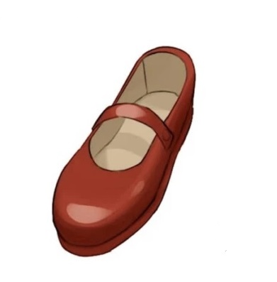
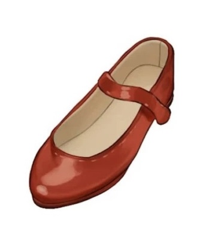

Во время рисования для нас открываются тонкости нашего мира, которые раньше мы не замечали. Чтобы облегчить себе задачу и грамотно понимать устройство объектов, света и тени полезно использовать референсы. Это вспомогательное изображение, которое художник изучает перед или во время работы, чтобы точнее передать детали воссоздаваемого.
Также, с помощью референсов художник визуально запоминает правильное построение элемента, что в будущем облегчит работу.
Одна из самых частых проблем, из-за которой работа лишавется правдоподобности, – отсутствие референса и рисование по памяти, что может приводить к искажениям. Мы покажем наглядную разницу между двумя изображениями, созданными с референсом и без.
Если вы при рисовании полагаетесь только на память, результат получится отличным от ваших представлений. Более того, если вы посмотрите на исходный референс и попробуете нарисовать объект снова, то поймете, что вы «преувеличили» его параметры в рисунке.


Рисунок корейской преподавательницы и художницы Кахён
Левое изображение нарисовано по памяти. Может показаться, что в нем почти нет ошибок — все из-за большого опыта в рисовании.
Даже если не смотреть на референс, можно нарисовать нечто похожее на желаемый результат. Но даже с большим опытом за спиной, без референса любой может
упустить некоторые детали.
На правом рисунке чувствуется уверенность линий и наполненность деталями, а главное — более реалистичный вид материала.
На втором варианте по референсу виден шов на обуви, что добавляет изюминку рисунку. Блики на обуви могут дать отсылку на материал изделия,
что на первом рисунке не так очевидно.
Задание
Возьмите три объекта разных сложности, размера и формы. Это могут быть яблоко, ваза и карандаш. Попытайтесь
срисовать объекты по очереди, начиная с самого легкого внешне, знаканчивая самым сложным. После, попросите кого-то оценить схожеть
того, что вы нарисовали, с выбранными вами объектами. Повторяйте упражнение с разными объектами, чтобы закрепить или улучшить результат.